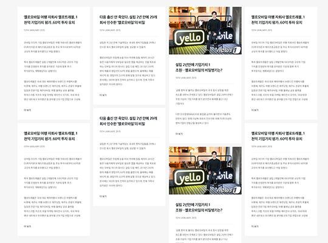
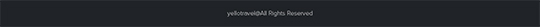
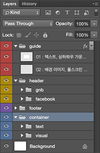
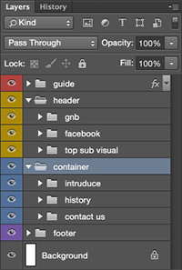
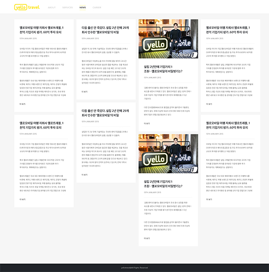
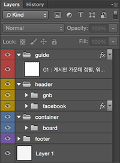

파일 규칙
> YT CORP > 파일 규칙
2015.08.26. 담당자 : 민소라
DESIGN
기존 파일은 유지하고 새로 파일을 생성해 해당 파일 이름 뒤에 아래의 파일명 규칙을 참고하여 관리한다.
파일명
일반적으로 파일명은 메뉴명+날짜(전달일)로 파일명을 구성한다.
ex) service_20150801.psd
파일 전달일에 파일 수정이나 업데이트가 생길 시, 아래와 같이 v(version)+숫자로 구성한다.
ex) service_20150801_v.1.psd
파일 전달일이 아닌 다른 날짜의 경우에는 해당 날짜로 변경해 재전달하고 버전은 초기화한다.
ex) service_20150801.psd
파일 전달일에 파일 수정이나 업데이트가 생길 시, 아래와 같이 v(version)+숫자로 구성한다.
ex) service_20150801_v.1.psd
파일 전달일이 아닌 다른 날짜의 경우에는 해당 날짜로 변경해 재전달하고 버전은 초기화한다.
폴더 관리
폴더 분류는 다음의 규칙을 따른다.
디자인 폴더 정리는 main과 sub 그리고 기타 페이지인 etc 폴더로 나누어 정리한다.
작업 파일(psd)과 미리보기 파일(jpg)을 같은 폴더에 정리한다.
미리보기 파일(jpg)의 경우에는 전체적인 레이아웃이나 디자인 변경이 많은 경우에만 업데이트한다.
yt_corp
디자인 폴더 정리는 main과 sub 그리고 기타 페이지인 etc 폴더로 나누어 정리한다.
작업 파일(psd)과 미리보기 파일(jpg)을 같은 폴더에 정리한다.
미리보기 파일(jpg)의 경우에는 전체적인 레이아웃이나 디자인 변경이 많은 경우에만 업데이트한다.
yt_corp
- 00_기획안
-
01_main
- main.psd
-
02_sub
- 01_about.psd
- 01_about.jpg
- 02_services.psd
- 02_services.jpg
- 03_news.psd
- 03_news.jpg
- 04_career.psd
- 04_career.jpg
-
03_etc
- 404_error.psd
- 404_error.jpg
- 04_참고자료
psd 구성
현재 공용폴더의 psd에서 큰 틀은 변경하지 않고 세부 사항만 변경하여 날짜를 기입하여 업로드한다.
psd 파일의 구성은 큰 단락으로 header / container / footer로 나눠져 있다.
header는 투명 배경과 흰색 배경으로 2가지 type으로 되어있으며, 서브 페이지에는 사이드 영역을 넣지 않고
신규 페이지 작업은 기존 페이지를 참고하여 작업한다.
visual 부분은 기본 명칭을 visual로 하고 페이지 또는 위치에 따라 main visual, sub top visual 등으로 덧붙여 사용한다.
main page는 풀스크린 방식의 이미지로 슬라이드 방식으로 이미지 교체 시에는 따로 시안 작업을 하지않고 이미지만 전달한다.
sub page는 기본 타입(type1)와 게시판 타입(type2)로 총 2가지 타입으로 되어있으며, 아래의 표를 참고하여 작업한다.
게시판은 워드프레스 게시판을 커스터마이징해서 적용해 css로 디자인만 수정하여 사용하고 있기 때문에
디자인 변경을 원할 시 프론트 엔드 개발팀과 논의 후 작업한다.
메인
※ 기본적으로 header > container > footer 순으로 레이어 정리를 하는 것을 원칙으로 하지만 메인과 같은 특수한 경우에는
footer 영역을 container 상단으로 올린다.
type1(기본 타입)
※ 서브 페이지에서 각각의 내용에 맞게 단락을 나눠 해당 내용의 제목과 함께 상세 폴더를 정리한다.
type2(게시판 타입)
레이어 폴더 설명
psd 파일의 구성은 큰 단락으로 header / container / footer로 나눠져 있다.
header는 투명 배경과 흰색 배경으로 2가지 type으로 되어있으며, 서브 페이지에는 사이드 영역을 넣지 않고
신규 페이지 작업은 기존 페이지를 참고하여 작업한다.
visual 부분은 기본 명칭을 visual로 하고 페이지 또는 위치에 따라 main visual, sub top visual 등으로 덧붙여 사용한다.
| header |

|
|
|---|---|---|
| container | visual | |
| cont | ||
| board |  | |
| footer |  | |
main page는 풀스크린 방식의 이미지로 슬라이드 방식으로 이미지 교체 시에는 따로 시안 작업을 하지않고 이미지만 전달한다.
sub page는 기본 타입(type1)와 게시판 타입(type2)로 총 2가지 타입으로 되어있으며, 아래의 표를 참고하여 작업한다.
게시판은 워드프레스 게시판을 커스터마이징해서 적용해 css로 디자인만 수정하여 사용하고 있기 때문에
디자인 변경을 원할 시 프론트 엔드 개발팀과 논의 후 작업한다.
메인
|
guide header gnb footer container text visual |
|
|  |
footer 영역을 container 상단으로 올린다.
type1(기본 타입)
|
guide header gnb top sub visual container introduce history contact us footer |
|
|  |
type2(게시판 타입)
|  |
guide header gnb container board footer |
|  |
레이어 폴더 설명
guide
가이드 영역
작업된 영역 또는 부분 수정된 부분을 다음 작업자가 알아보기 쉽게 표시를 해주기 위한 레이어 폴더이다.
작업한 영역을 박스로 표시하고 레이어 파일 이름에 번호와 작업 부분에 대한 설명을 기입한다.
작업된 영역 또는 부분 수정된 부분을 다음 작업자가 알아보기 쉽게 표시를 해주기 위한 레이어 폴더이다.
작업한 영역을 박스로 표시하고 레이어 파일 이름에 번호와 작업 부분에 대한 설명을 기입한다.
header
상단 영역
기본 틀을 유지하고 특별한 경우를 제외하고 변경하지 않는 것을 원칙으로 한다.
기본 틀을 유지하고 특별한 경우를 제외하고 변경하지 않는 것을 원칙으로 한다.
container
본문 영역
해당 페이지에 맞는 내용을 폴더로 나누어 정리한다.
해당 페이지에 맞는 내용을 폴더로 나누어 정리한다.
footer
하단 영역
기본 틀을 유지하고 특별한 경우를 제외하고 변경하지 않는 것을 원칙으로 한다.
기본 틀을 유지하고 특별한 경우를 제외하고 변경하지 않는 것을 원칙으로 한다.
MARK UP
HTML 파일은 따로 폴더 없이 최상단에서 작업하고 나머지 작업은 각각의 폴더(css, img, js)에서 작업한다.
파일명
HTML 작업시
CSS 작업시
image 작업시
스크립트 작업시
www
마크업 작업 영역
파일명은 디자인 파일과의 작업 확인을 편리하게 하기 위해, 디자인 파일명과 동일하게 하는 것을 원칙으로 한다.
디자인 파일명의 규칙은 아래와 같다.
메뉴명+날짜(디자인 파일명의 날짜와 동일)로 파일명을 구성한다.
ex) service_20150801.html
파일 전달일에 파일 수정이나 업데이트가 생길 시, 아래와 같이 v(version)+숫자로 구성한다.
ex) service_20150801_v.1.html
파일명은 디자인 파일과의 작업 확인을 편리하게 하기 위해, 디자인 파일명과 동일하게 하는 것을 원칙으로 한다.
디자인 파일명의 규칙은 아래와 같다.
메뉴명+날짜(디자인 파일명의 날짜와 동일)로 파일명을 구성한다.
ex) service_20150801.html
파일 전달일에 파일 수정이나 업데이트가 생길 시, 아래와 같이 v(version)+숫자로 구성한다.
ex) service_20150801_v.1.html
CSS 작업시
css
CSS 작업 영역
파일 상단에 메뉴명+날짜(디자인 파일명의 날짜와 동일)을 기입해 해당 파일의 업데이트를 주석처리 한다.
주석은 디자인 사안의 버전과 맞춰 작업하는 것을 원칙으로 한다.
파일 상단에 메뉴명+날짜(디자인 파일명의 날짜와 동일)을 기입해 해당 파일의 업데이트를 주석처리 한다.
주석은 디자인 사안의 버전과 맞춰 작업하는 것을 원칙으로 한다.
/* 20150801_v.1 */
image 작업시
img
이미지 파일 영역
이미지 스프라이트 방식을 사용하여 작업하고 기존 작업되어있는 이미지 파일은 그대로 유지하고
파일명 뒤에 버전을 붙여 새로운 파일명으로 변경한다.
이미지 스프라이트 방식을 사용하여 작업하고 기존 작업되어있는 이미지 파일은 그대로 유지하고
파일명 뒤에 버전을 붙여 새로운 파일명으로 변경한다.
스크립트 작업시
js
스크립트 파일 영역
작업을 하면서 사용되거나 추가할 플러그인을 js 폴더에 원본을 변경하지 않고 추가한다.
플러그인에 사용된 css를 변경하고자 할 경우에는 style.css 파일의 하단에 오버라이딩해서 사용하는 것을 원칙으로 한다.
작업을 하면서 사용되거나 추가할 플러그인을 js 폴더에 원본을 변경하지 않고 추가한다.
플러그인에 사용된 css를 변경하고자 할 경우에는 style.css 파일의 하단에 오버라이딩해서 사용하는 것을 원칙으로 한다.
<!-- 2015-08-01 selectric plugin 실행문 -->
<script>
$(function() {
$('.cover_select select').selectric();
});
</script>